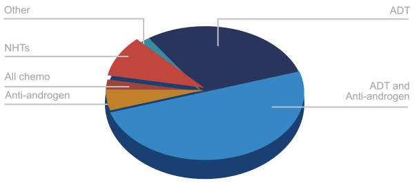

ADT and CAB are most commonly used treatments in nmCRPC3
Many clinicians in Asia Pacific use traditional treatments such as androgen deprivation therapy (ADT) and conventional combined androgen blockage (CAB)



Patients with metastatic castration-resistant prostate cancer (mCRPC) face:
Patients with non-metastatic CRPC (nmCRPC) tend to have good:
Many clinicians in Asia Pacific use traditional treatments such as androgen deprivation therapy (ADT) and conventional combined androgen blockage (CAB)
ADT alone leads to disease progression to mCRPC in 1–2 years.
The clinical efficacy of CAB is also limited, with no significant difference in survival seen between CAB
Several key international guidelines have been updated to reflect the limited clinical benefit of using CAB and ADT alone in patients with nmCRPC.
e.g. apalutamide + ADT:
Pivotal clinical trials in patients with nmCRPC showed:


to change the way we treat patients advanced prostate cancer
to recognize the body of evidence and put it into practice. CAB and ADT are no longer enough in the treatment of nmCRPC.
to intervene early, using a novel hormone therapy, to give your patients with nmCRPC more time to enjoy life with their family and friends.
1 Luo J, et al. Oncology (Williston Park). 2016; 30:336–44. Body A, et al. Aust Prescr. 2018; 41:154–9. Saad F et al. Can Urol Assoc J 2018; 12(9):E415-20
2 Albertsen PC et al Urology. 1997;49(2):207-216; discussion 216-207
3 Janssen. Data on file
4 Sweeney CJ, Chen YH, Carducci M, et al. Chemohormonal therapy in metastatic hormone-sensitive prostate cancer.
England J Med. 373(8):737-746. Kyriakopoulos CE et al. J Clin Oncol. 2018(36):1080 -1087. Onukwugha E et al. Urol Oncol. 2018;36(7):340.e23-340.e31
5 NCCN guidelines version 3, 2016. Mottet N, et al. EAU guidelines.https://uroweb.org/guideline/prostate-cancer/.
Accessed June 13, 2016. Basch et al. J. Clin. Oncol. 2014 32(30): 3436-3448. NICE Pathways https://pathways.nice.org.uk/
6 Small EJ et al. Annals of Oncology 0: 1–8, 2019. Smith MR et al. N Engl J Med 2018;378:1408-18.